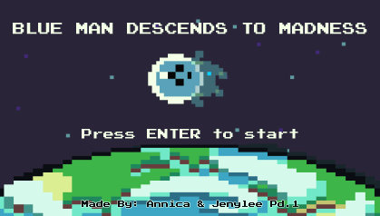

I was born and raised in Queens, New York! I thrive in places of diversity and love exploring cultures. My current hobbies include drawing, coding, reading, and playing video games. I'm heavily inspired by Nintendo Games which have driven my passion for coding and the arts.
In my future as a Computer Scientist, I wish to diversify the field for both BIPOC and women. As such, I hope to visit marginalized communities and schools to bring CS programs that will help to introduce tech fields to them.
Here is more stuff about me!
- I am a very indecisive person!
- - I like both tea and coffee
- - I like both cats and dogs
- Favorite Video Games:
- - Splatoon
- - Pokemon